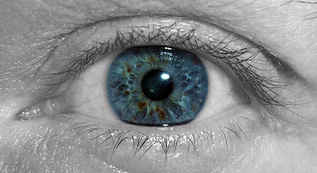

Dry Eye Syndrome: What Is It?
Dry eye syndrome occurs when the eyes don't produce enough tears, or when the tears evaporate too quickly due to a lack of the oils needed for sufficient lubrication. This makes the eyes dry, red, itchy and irritated.
Autoimmune Disease and Dry Eye: Is There a Connection?
Feb 26, 2023
Dry eye syndrome occurs when the eyes don't produce enough tears, or when the tears evaporate too quickly due to a lack of the oils needed for sufficient lubrication. This makes the eyes dry, red, itchy and irritated.

Autoimmune diseases can disrupt the normal functioning of the tear glands by prompting the immune system to mistakenly attack them. Treating the autoimmune disease can often help alleviate dry eye symptoms. At the same time, some medications used to manage autoimmune disease symptoms, like anti-inflammatory medication, may actually exacerbate DES.

Here are some common autoimmune diseases that raise the risk of developing DES:
Schedule a dry eye exam at
Home » What’s New » Autoimmune Disease and Dry Eye: Is There a Connection?
Autoimmune diseases are a group of disorders that result in the body's immune system attacking itself. There are over 80 types that impact different parts of the body and result in a variety of symptoms. A common condition associated with several autoimmune diseases is dry eyes .
Eye Shop in Houston provides care for dry eye syndrome (DES) resulting from autoimmune disease and other causes.
DES is often caused by environmental factors, like being exposed to dry wind and air, not blinking enough while looking at a digital device or while reading, and comedogenic makeup — but it can also result from an underlying autoimmune disease.
Left untreated, dry eye syndrome can result in chronic eye inflammation and even corneal ulcers and permanent vision loss, in severe cases.
Sjogren's Syndrome: This multifaceted condition often coexists alongside other autoimmune diseases. While it can affect almost any part of the body, it's best known for targeting the tear and salivary glands, leading to a chronically dry mouth and eyes.
Lupus: This systemic autoimmune disease affects different parts of the body, including the eyes, causing dry eye and other eye problems.
Rheumatoid Arthritis: In addition to inflamed joints, rheumatoid arthritis can affect the eyes. In fact, the autoantibodies that target your joints can target the eye's glands and other structures.
Thyroid Eye Disease: The immune system can cause inflammation in the tissues around the eyes and trigger dry eye syndrome.
Type 1 Diabetes: High blood sugar can affect the eye's ability to produce tears and speed up tear evaporation. In addition, it can damage the eye's nerves, making it difficult for the eyes to know that they're dry and need to produce tears.
These are just a few examples of autoimmune diseases that can cause dry eye. It's important to see an eye doctor if you're experiencing symptoms of dry eye syndrome, and mention any autoimmune disease in your medical history.
Schedule a dry eye exam at Eye Shop in Houston. We can help.

Eye Shop - Located at 13130 Memorial Drive, Houston, TX 77079. Phone: 713-977-8464